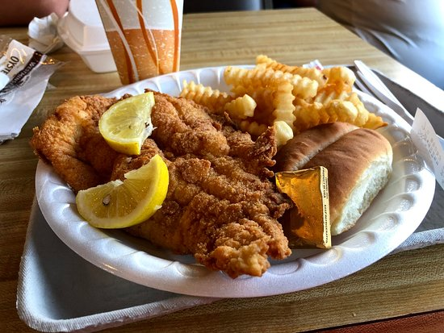
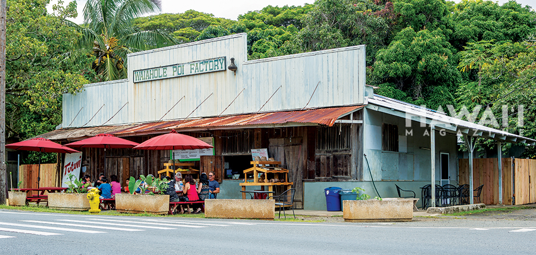
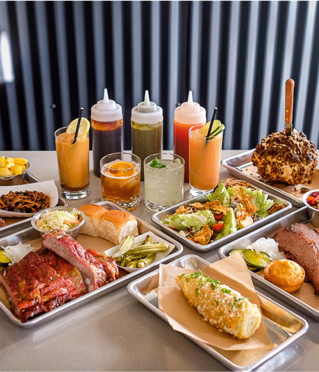
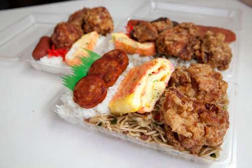
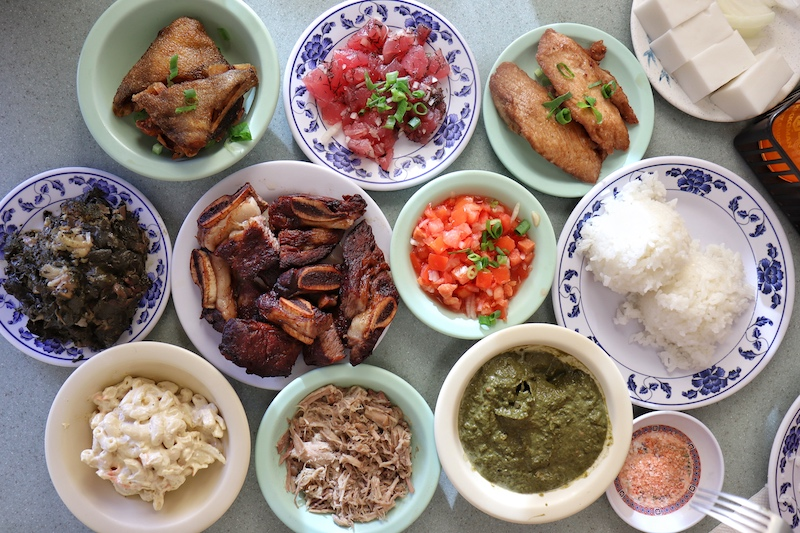
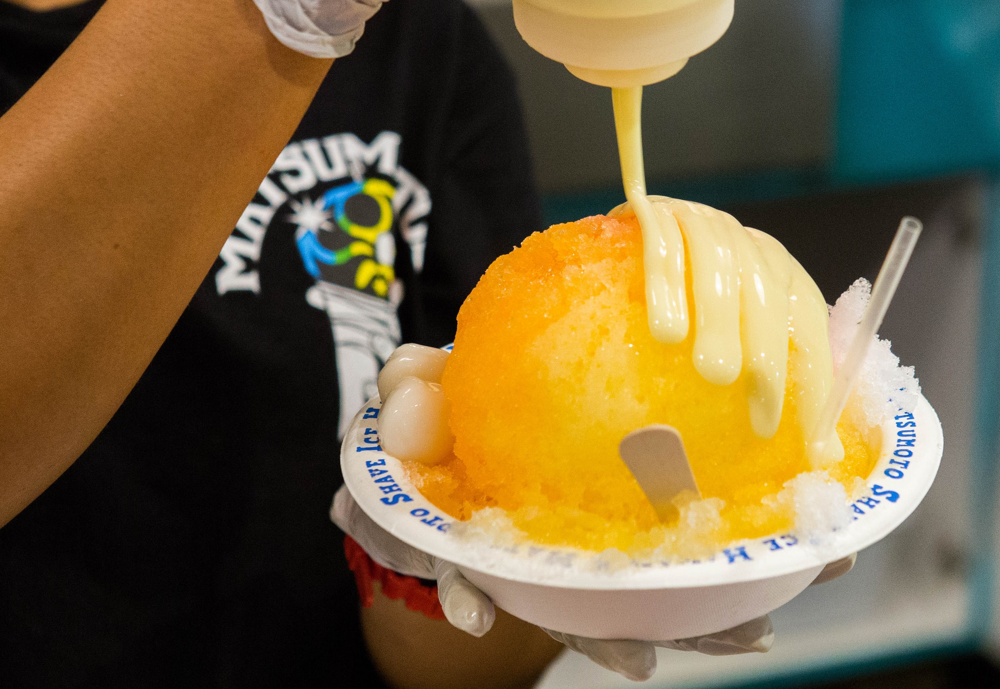

Ken's Fresh Fish
The name tells it like it is. Owner Ken Broad is a fisherman who sells fresh fish (never frozen) from this simple roadside shop on the Windward coast. You’ll find ‘ahi in poke, sashimi, sandwich, or katsu form, but you’ll also see less common fish available here, including opah or small reef fish like menpachi. Order a plate lunch from this takeout-only spot, and pick up some fish filets to cook at home on your way out. [$-$$]
Waiahole Poi Factory
Located on the south shore of Honolulu, the world-famous neighborhood of Waikiki was once a playground for Hawaiian royalty. Known in Hawaiian as "spouting waters," Waikiki was introduced to the world when its first hotel, the Moana Surfrider, was built on its shores in 1901. Today, Waikiki is Oahu’s main hotel and resort area and a vibrant gathering place for visitors from around the world. Along the main strip of Kalakaua Avenue you'll find world-class shopping, dining, entertainment, activities and resorts.
Over Easy
Honolulu loves breakfast, and few places do it better than Over Easy, a warm, happy family operation anyone would be proud to support. Delicate, golden, crispy-edged pancakes are the highlight of sweet dishes, but don’t leave without trying the pig hash with lomi tomatoes and Okinawan sweet potatoes, or the bacon-cabbage broth poured over a bowl of rice and Portuguese sausage. Outside seating and takeout are available. [$$]
Mitsu-Ken
There’s always a good reason to stop by the takeout-only Mitsu-Ken, one of Honolulu’s remaining okazuya, or old-school Japanese delis. Its killer bento boxes are a staple among parents who pack them for school lunches, groups of friends heading to the beach, and anyone in need of a meal on the go. The garlic chicken, chopped into two-bite chunks, battered, fried until crisp, and coated in a garlic-shoyu-sugar glaze, also inspires serious cravings. There are many options on the menu, but make things easy and order the mini bento. The not-so-mini box comes with garlic chicken, rolled egg omelet, and hot dog, all served over a base of furikake rice. [$]
Helena’s Hawaiian Food
In 1946, Helen Chock opened the doors to Helena's Hawaiian Food, a humble eatery on North King St. in Honolulu, Hawaii. Over the past 64 years Helena's Hawaiian Food has been serving the local community quality Hawaiian cuisine. In 2000, the James Beard Foundation awarded Helena's Hawaiian Food the Regional Classic Award. Helena's is one of a handful of restaurants in Hawaii to receive this distinctive award. After nearly 55 years, the restaurant was relocated to its current location on 1240 N. School Street. Helena's remains the simple and unpretentious eatery it was over 6 decades ago. The restaurant is now run by Helen's grandson, Craig Katsuyoshi.
20 Hawaiʻi Dishes You Must Try When Traveling to the Islands
Eating your way through Hawaii is always better in good company. Whether that means with an adventurous friend who’ll try anything, or posted up across your social media to give your virtual circle a taste, these are all the local favorites we seriously love to “like.”